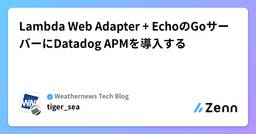
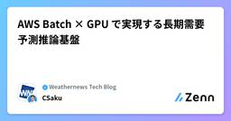

Weathernews Tech Blogのフィード
https://zenn.dev/p/weathernews
株式会社ウェザーニューズの技術系ブログです
フィード

Lambda Web Adapter + EchoのGoサーバーにDatadog APMを導入する
Weathernews Tech Blogのフィード
概要Datadog APMをGoアプリに導入する方法として、Tracer (手動計測) とOrchestrion (マジックコメントによるコンパイル時自動計測注入) の2つのアプローチを試しました。計測を導入したことにより、カスタムスパンによるボトルネックの特定やエラー率の監視が可能になりました。Orchestrionでの実装を試したところスパンが記録されませんでしたが、tracer.Start() を手動で呼び出し WithLambdaMode(false) を指定することでトレースが記録されるようになりました。ただし、Datadogサポートへの問い合わせの結果、Lambd...
3日前

AWS Batch × GPU で実現する長期需要予測推論基盤
Weathernews Tech Blogのフィード
はじめにこんにちは。株式会社ウェザーニューズ陸上気象事業部の CSaku です。2024年に入社し、現在はAWS上で機械学習基盤の構築作業を担当しています。本記事では、長期需要予測の推論パイプラインの最終ステップを担うコンポーネントについて解説します。GPU搭載インスタンスを AWS Batch でオンデマンド起動し、AutoGluon を用いた時系列予測モデルの推論を実行する構成は、ウェザーニューズ社内ではなかなか少ない事例の一つです。「なぜ Lambda ではなく Batch なのか」「Docker コンテナにどう GPU を割り当てるか」「Step Functi...
8日前

AWS Summit Japan 2026 登壇レポート - AI Agentが変える業務と顧客体験
Weathernews Tech Blogのフィード
はじめにこんにちは。ウェザーニューズ 航海気象事業部で AI Agent 開発リーダーを務めている smirnoff です。海運事業者向けに船舶の安全・環境・経済運航を支えるための情報を提供する統合型サービス「SeaNavigator」へ、AI Agent を組み込むチームをリードしています。2026 年 6 月 25 日〜26 日に幕張メッセで開催された AWS Summit Japan 2026 で、この取り組みを事例セッションとして紹介しました。実装の詳細は AWS builders.flash の記事 にまとめています。ここでは、登壇で話した要点と当日感じたことを残しま...
9日前
複雑な条件を持つ"マイソリューション"を決定木で高速判定する
Weathernews Tech Blogのフィード
はじめにこんにちは、ウェザーニューズ モバイル・インターネット事業部のnait-tです。主にアプリやWebサイトのバックエンド開発を担当しています。先日、ウェザーニュースProに新しい機能をリリースいたしました。ユーザーが気象条件を自由に設定し、条件が満たされた際にプッシュ通知を受け取ることができる機能、マイソリューションです。マイソリューション設定画面通知のイメージ本記事では、この通知判定の実装で採用した決定木による条件評価アルゴリズムについて紹介します。 課題：複雑な条件をどう扱うかマイソリューションは、通勤・通学やアウトドア、健康、美容...
14日前
AWS Summit Japan 2026 ブース展示レポート - AI Agentの多言語展開と解析基盤
Weathernews Tech Blogのフィード
まとめAWS Summit Japan 2026でAI利用の事例としてブースを出展しました。ウェザーニュースアプリのAI Agent機能「お天気エージェント」の多言語展開について展示しました。 はじめにこんにちは。ウェザーニューズ モバイル・インターネット事業部のhokaです。主に個人向けサービスの開発業務を担当しています。WNIでは多くのサービス基盤をAWSで構築・運用しています。今年のAWS Summit JapanではAI利用の事例として展示の機会をいただき、ウェザーニュースアプリに搭載している AI Agent機能「お天気エージェント」の多言語展開について紹介し...
18日前
AI と並走する 3 日間 ― ウェザーニューズ 12 チーム 60 名で AI-DLC を試した話
Weathernews Tech Blogのフィード
まとめ社内 12 チーム・約 60 名で、AWS が提唱する AI-DLC のワークショップを 3 日間にわたり開催しました開発・営業・運営による混成のチーム構成で進めた結果、ほぼすべてのチームで最終日までに実用レベルのプロトタイプに到達できましたAI による開発の速さを体感できた一方で、人間側の合意形成やレビュー速度、AI への情報の与え方が新しいボトルネックとして見えてきました各チームから集まった生の感想をそのまま掲載し、横断的に見えてきた共通パターンを整理しました本記事自体も AI-DLC 的なフローで、ブログ執筆用のカスタムスキル 2 つを組み合わせて書いています...
3ヶ月前
ベクトル検索を使った運営用ツールの作成
Weathernews Tech Blogのフィード
はじめにこんにちは、ウェザーニューズの kengok です。私は昨年 2025 年に新卒入社し、モバイル・インターネット事業部にて主にウェザーリポートのバックエンド処理やアプリ計測を担当しています。そんな私が配属直後に携わったのがこのベクトル検索の実装でした。本記事では、Amazon Bedrock と OpenSearch を活用してウェザーリポートのベクトル検索システムを構築した事例を紹介します。 背景ウェザーニューズでは毎日ユーザーの皆様からウェザーリポートと呼ばれる天気の報告をしていただいており、それらのデータが大量に蓄積されています。このウェザーリポートにはコメ...
4ヶ月前
「株式会社ウェザーニューズ（Research Initiative）」が科研費登録機関になりました
Weathernews Tech Blogのフィード
はじめにこんにちは。ウェザーニューズ予報センターの安成です。大学や研究機関の多くの研究者が、研究活動を行う際に、一般的に知られている国の研究費として申請するのが科研費（科学研究費助成事業）ですが、科研費の申請やその予算の管理には、文科省によって科研費登録機関に指定される必要があります。これまで、ウェザーニューズ（以後、略す場合はWNI）では、他の各府省が管轄する国家プロジェクトなどを申請する際の府省共通研究開発管理システム(e-Rad)番号の取得はしておりましたが、科研費の申請資格である科研費登録機関には指定されておりませんでした。昨年秋頃から文科省の科研費登録機関へ登録のた...
4ヶ月前
Fluent Bit / Kinesis / Firehoseで秒間1万件のログを保存する構成
Weathernews Tech Blogのフィード
はじめにこんにちは。ウェザーニューズ モバイル・インターネット事業部のhokaです。ウェザーニューズのサービスでは、地震発生時などにユーザーからのアクセスが短時間で急増することがあります。今回のケースでは、リクエストに伴うログを取りこぼしなく保存する必要がありました。この記事では、ピーク時に秒間1万件のログを安定して受信し、S3へ保存するために構築したログ基盤の構成について紹介します。あわせて、Fluent BitからKinesis Data Streams（KDS）へログを送信する際にハマったポイントとして、KDS向けPluginの選定とレコード集約方式の違いについても解説しま...
5ヶ月前
AWS Private CA で AKI 付き証明書を発行してみた
Weathernews Tech Blogのフィード
まとめPython 3.13 環境で自己署名証明書を使うと発生した Missing Authority Key Identifier エラーの原因と対処方法を検証しました。AWS Private CA を使ってプライベート CA を用意し、AKI（Authority Key Identifier）付きの証明書を発行しました。認証局は CloudFormation で作成しました。証明書発行は Python スクリプトで自動化しました。 技術スタック言語 / ランタイム: Python 3.13主要ライブラリ: boto3, cryptography, ...
7ヶ月前
AWS re:Invent 2025 参加レポート 〜現地で感じた全体感と、Weathernewsの業務への接続点〜
Weathernews Tech Blogのフィード
はじめにこんにちは、株式会社ウェザーニューズ陸上気象事業部のA-nktです。今回、社内から4名で AWS re:Invent 2025 に参加してきました。本記事では、新サービスの網羅的な紹介ではなく、現地で感じたイベント全体の空気感と、印象に残ったセッションからWeathernews（以下 WNI）の実業務にどう活かせそうかという観点でまとめます。同じように今後 re:Invent への参加を検討している方や、AWS の現在地を知りたい方の参考になれば幸いです。 WNI がAWS re:Invent に参加した理由と目的WNI では、気象予報サービスをはじめとする多くの...
7ヶ月前
気象 x AI 需要予測 - ウェザーニューズ 360 Insight
Weathernews Tech Blogのフィード
まとめ顧客がビジネスデータと気象データの相関を簡単に分析できる、「ウェザーニューズ 360 Insight」を無料公開しましたフロントエンドは Vue + Nuxt (SSR / SPA) を AWS 上でホスティングし、バックエンドは AWS Step Functions と Lambda / Fargate のサーバレス構成で実現しています設計は Gemini Pro、実装は Claude Sonnet を中心に利用し、Chrome DevTools MCP で開発を加速しました はじめにこんにちは。株式会社ウェザーニューズ陸上気象事業部の Hoshock です。...
7ヶ月前
ライブカメラに映った落雷をAmazon Novaで検出する試み
Weathernews Tech Blogのフィード
こんにちは。ウェザーニューズ モバイル・インターネット事業部の hoka です。ウェザーニューズにはウェザーニュース アプリユーザーのみなさまにご協力いただき設置しているライブカメラが日本国内に 2000 ヵ所以上あります。ライブカメラの映像を動画理解モデルである Amazon Nova を使って解析し、落雷の検出を試してみました。 録画・検出例落雷・稲妻がはっきり映っていることがわかります。落雷の検出例(茨城県 土浦市)落雷の検出例(石川県 珠洲市) 落雷検出のアプローチ3 つのステップに分けて処理しています落雷が発生した地点周辺のライブカメラを録画映像内で...
10ヶ月前
ウェザーニューズにおけるPlatform Engineering
Weathernews Tech Blogのフィード
まとめ本記事では、ウェザーニューズにおけるPlatform Engineeringの取り組みについて紹介します。ウェザーニューズは、「ウェザーニュース for business」や「Sea Navigator」などの複数のBtoB SaaSプロダクトを並行開発する中で、Platform Engineeringを導入することで以下の価値を実現しています： Platform Engineeringの4つの特徴CloudFormationベースの体系的なインフラ管理機能別モジュール設計による疎結合なアーキテクチャARM64アーキテクチャに特化したテンプレート標準化変更...
1年前
FastMCPとOpen API Specification を使った天気予報Remote MCP Serverの実装
Weathernews Tech Blogのフィード
まとめウェザーニューズの気象データを提供する Remote MCP Server を構築しましたFastMCP と Open API Specification を使うことで、短期間で MCP Server を実装できました本記事で紹介した MCP Server は Beta 版として公開しています はじめにこんにちは、ウェザーニューズ モバイル・インターネット事業部の Hoka です。直近では API リファレンスページ、コーポレートブログの構築を担当しています。ウェザーニューズでは気象データを主に REST API 経由で社内外に提供・配信しています。LLM・A...
1年前
テックブログ始めました
Weathernews Tech Blogのフィード
まとめウェザーニューズのテックブログを開設しましたエンジニア、広報、法務による多角的なレビューを導入します一連の流れをシステマチックにするため、GitHub Actions を利用した自動化を図っていますシステム構築にあたり Vibe/Agentic Coding を最大限活用しました はじめにはじめまして、株式会社ウェザーニューズ陸上気象事業部の Hoshock です。全社のモダン開発・クラウド化を推進しており、直近では新卒の開発研修リーダーを務めています。この度、表題の通りウェザーニューズのテックブログを開設しました。このブログでは、ウェザーニューズの開発...
1年前